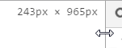

Ist Ihre Lösung / bzw. die Muster Lösung Mobile First? Begründen Sie.
Nein - Begründung: Erst durch die Media Queries wird die Mobile Ansicht sichtbar. Dies wiederspricht Mobile First - Es könnte sein, das Media Queries nicht unterstützt werden wiederspricht dem "Progressive Enhancement"-Prinzip.
Welcher Farbe erhält 'A' falls die Grösse des Viewports auf 200px gesetzt wird.
Viewport kann im Chrome wie folgt geändert werden - Debug Tools müssen geöffnet sein und rechts angedockt sein:

Blau. Grund: Das zweite Media-Querie überschreibt das vorhergehende.
Zoomen Sie auf den Faktor: 0.5. Weshalb hat sich die Farbe vom "A" verändert?
Bei Desktop Geräten verändert sich beim Zoomen das Verhältnis zwischen Device Pixeln und CSS-Pixeln. Aus den 200 Device Pixeln werden 400 CSS Pixeln. Daraus folgt: Die Regel trifft nicht mehr zu.
Zoomen Sie auf den Faktor 2.0. Wieviele Device Pixel muss der Viewport besitzen damit der Buchstabe "B" Grün wird. Begründen Sie den Wert.
1000. Grund: Durch den Faktor werden 2 Device Pixel auf 1 CSS Pixel gemappt. Damit sind 1000 Device Pixel notwendig um 500 CSS Pixel zu erhalten.